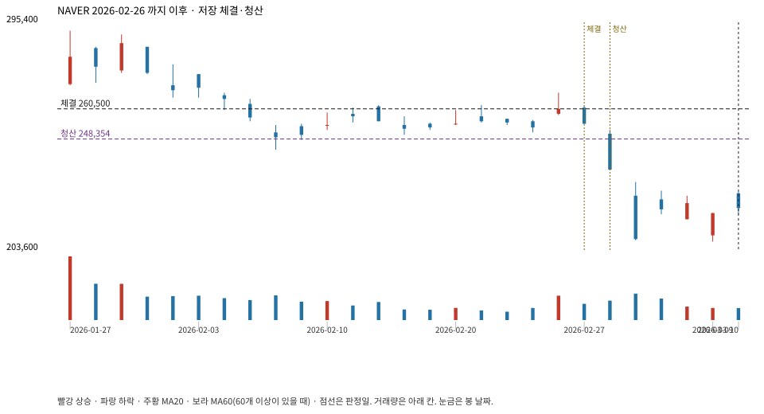

계좌를 다시 돌리지 않았다. 아래는 저장된 주문·체결·청산·비용·손익이다.

{
"case_id": "b7dbf7a4264beb21",
"status": "closed",
"trade": {
"symbol": "035420.KS",
"signal_date": "2026-02-26",
"quantity": 81,
"entry": 260500,
"stop": 248478,
"target": 292000,
"planned_risk": 1025062.5136409958,
"reserved_cash": 21121600.499999996,
"fill": {
"date": "2026-02-27",
"price": 260500,
"fee": 21100.5
},
"exit": {
"date": "2026-03-03",
"price": 248353.761,
"reason": "stop",
"net_pnl": -1025062.5136409961,
"ambiguous_bar": false
}
},
"cost": "research fee 10bp each side, slippage 5bp; amounts below are the stored ledger, not a new run",
"chart": "c\/b7dbf7a4264beb21.svg"
}